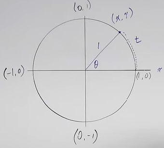

Trig Functions and the Unit Circle
Two different approaches to trig functions – show why they work.
One approach: trig functions relate an angle to two sides of a right triangle. (Usually one of the acute angles.) So need three things in every trig function
Other approach:

Remember for radians lectures \( s = r\space\theta \). On unit circle, r = 1, and function becomes \( t = r\times\theta \) or \( t = 1\times\theta \), so ONLY on a unit circle, angle is same as arc length.
For radians, on unit circle, arc length = radius. If radius not one, doesn’t work.
\( \sin t = \sin \theta = y \)
\( \cos t = \cos \theta = x \)
\( \tan t = \tan \theta = \frac{y}{x} \) or \( \frac{\sin\theta}{\cos\theta} \)
\( \csc \theta = \frac{1}{y} \)
\( \sec \theta = \frac{1}{x} \)
\( \sec \theta = \frac{x}{y} \)
sin = y because y to x axis is vertical line, forming right triangle, etc.
So trig functions relate either the arc length or central angle to the point on the unit circle.
SOH CAH TOA
SOH: Sin(θ) = Opposite / Hypotenuse
CAH: Cos(θ) = Adjacent / Hypotenuse
TOA: Tan(θ) = Opposite / Adjacent
Now filling out unit circle. Deal with
Quadrant Angles
Figuring out all six trig functions for angles (in radians), 0, \( \frac{\pi}{2} \), \( \pi \) \( \frac{3}{2} \pi \), \( 2 \pi \).
Note signs +/- for various functions in various quadrants.
Mnemonic: All Students Take Calculus for what sign is in four quadrants (I. All II sin III tan IV cos)
Relates to graphs of the trig functions
Can we determine trig functions from a point, say \( \lparen{-\frac{1}{2}, \frac{\sqrt 3}{2}} \rparen \) Sin is y value, \({\sqrt{3}}{2}} \), cos is x value, and tan is \( \frac{cos}{sin} = \frac{y}{x} - \sqrt{3} \). When reciprocate, should rationalize denominator.
Exercise: Find 6 trig function values for \( \frac{5\pi}{3} \)
Did some later functions on paper. I did mine before he did his – generally right. One mistake was on multiplying square roots. Note that this is correct:
I thought I had to leave it as left hand side (unsimplifed).
Rest of video was calculator problems.